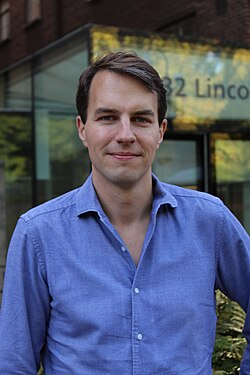

About the Program 讲习班简介
The PKU–Zurich PhD Summer School on Machine Learning for Macroeconomics and Finance is an international academic program focusing on frontier applications of machine learning in macroeconomics and macro-finance. The program convenes world-leading faculty to provide rigorous, systematic training in deep learning, reinforcement learning, and discrete- and continuous-time methods, with applications to heterogeneous-agent models, asset pricing, macro-finance, and dynamic general equilibrium.
北京大学–苏黎世大学 PhD Summer School on Machine Learning for Macroeconomics and Finance 是由北京大学与苏黎世大学学者联合主办的高端国际博士生暑期讲习班，聚焦机器学习方法在宏观经济学与宏观金融中的前沿应用。讲习班邀请来自世界一流大学的顶尖学者，系统讲授深度学习、强化学习与离散/连续时间方法在异质性主体模型、资产定价、宏观金融与动态一般均衡中的最新理论进展与计算工具，旨在帮助青年学者掌握前沿研究范式，推动跨学科基础研究。
Organizing Committee 组织委员会
- ▪ Felix Kubler (University of Zurich)Felix Kubler (University of Zurich，北京大学经济学院荣誉教授)
- ▪ Bo Li (Peking University)李博 (北京大学)
- ▪ Yucheng Yang (University of Zurich)杨雨成 (University of Zurich)


Instructors and Speakers 授课教师与演讲嘉宾
Prof. Weinan E
Peking University; CAS Fellow北京大学，中科院院士
Keynote: AI for Science · Jul 7, 16:30主旨演讲: AI for Science · 7月7日 16:30
Prof. Goutham Gopalakrishna
University of Toronto, RotmanUniversity of Toronto, Rotman

Prof. Felix Kubler
University of ZurichUniversity of Zurich
Prof. Serguei Maliar
Santa Clara UniversitySanta Clara University

Prof. Benjamin Moll
LSELSE
Special Online Lecture特别线上讲座

Prof. Jonathan Payne
Princeton UniversityPrinceton University

Prof. Simon Scheidegger
HEC LausanneHEC Lausanne
Prof. Yucheng Yang
University of ZurichUniversity of Zurich
Topics and Course Coverage 教学内容与方向
Participant Resources 学员信息入口
Contact Information 联系我们
Academic Inquiries 学术咨询
Yucheng Yang杨雨成
Email: yucheng.yang@uzh.ch
Program & General Inquiries 项目及其他咨询
Peiyuan Zhang张培元
Email: zpyuan@pku.edu.cn